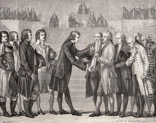

Shevuot (Oaths) 39 - Oaths Are Too Serious a Matter to be Administered
Since the punishment for violating a Biblical oath is very severe, Rashi writes that Jewish courts in his time refrained from asking the defendant to swear and instead placed a curse on any defendant who would lie.
If the defendant says, "I will not swear," he is immediately excused from court, owes money, and does not come back to change his opinion. However, if he says, "I shall swear," those standing there recite the phrase "Turn away from the tents of these wicked men." Even the plaintiff is considered guilty for causing an oath, since he should not have dealt with an untrustworthy person.
The judges tell him, "You should know that the whole world trembled at the words 'Do not take the name of Hashem your God in vain'" And why is this? Because about a false oath it says, "God will not absolve."
Art: H. de la Charlerie - King Louis XVI Swearing on the Book of the Constitution